#load packages
packages <- c("microdatasus", "foreign", "read.dbc", "readr", "dplyr", "purrr",
"ggplot2","lubridate","geobr", "stringr", "patchwork",
"arsenal", "knitr", "scales", "tidyr")
invisible(install.packages(setdiff(packages, rownames(installed.packages()))))
invisible(lapply(packages, function(pkg) suppressMessages(require(pkg, character.only = TRUE))))
# set options
options(scipen = 999)
options(timeout = 2000)
# load functions
files.sources <- list.files("R/")
invisible(sapply(paste0("R/", files.sources), source))Preprocessing Dengue Data
This document aims at introducing dengue data to someone with no previous experience. Before starting it is necessary to have the health data, instructions on how to obtain these are in the ReadMe of this project.
The steps include:
- Downloading the data
- Getting to know the data: detect differences between different datasets
- Information on the patients: Age, Sex, Pregnancy, Race
- Information on the case: classification, confirmation criteria, dengue category, exam type, evolution of the case
- Timeline of the dengue case: distribution throughout the year, duration of cases, course of the disease
- Mapping spatially: Absolute cases, incidence
Along the way, each topic will be divided into 3:
 indicates that you will learn something
indicates that you will learn something indicates that you will see the data in a plot
indicates that you will see the data in a plot indicates that there is a opportunity to filter data (if necessary).
indicates that there is a opportunity to filter data (if necessary).
Setting up the R environment
 In every R script,
In every R script,
In this script we will need the following R-scripts:
microdatasus: To download the health data from brazil
foreign: this function is used to read dbf files
read.dbc: to open the files in .dbc format
readr: to open csv files
purrr:
ggplot2: to create the graphs
lubridate: to help format the dates
geobr: to download the shapefiles of brazils administrative boundaries
stringr: to support string modifications
patchwork:
knitr: to create interactive tables
scales: to rescale continuous vectors to have limits
dplyr & tidyr: to use functions from the “tidyverse”
Other options that are being set up now include, setting a maximum waiting time for functions (i.e. timeout), how large numbers should be displayed (i.e. scipen) and functions are locally loaded.
Download the data by microdatasus
As described in the download instructions, the health data from Brazil can be downloaded by many different methods: microdatasus, PySUS or by Filezilla FTP link. In this script, the data will be downloaded with the help of the package microdatasus, the following code block is an example that will download the data for the year 2015. The dengue database is heavy and it can take time to download it. It is therefor recommended to download the data once and save it to your computer. Afterwards you can load it from your local disk every time you want to analyse it.
In the case of this script, run it the first code block once (with the second code block commented out), and then you can comment out the first code block and uncomment the first code block.
# den15 <- fetch_datasus(year_start = 2015, year_end = 2015, information_system = "SINAN-DENGUE")den15 <- readRDS("data/den15.rds")Understanding the data structure
 Specifically, it contains 139 variables, the explanation for each variable can be found on the SINAN webpage from the Ministry of Health of Brazil. However, it is only available in Portuguese. A translation into English can be found in this csv file. This file also contains the decodification for all numerical categories. A small overview of this file can be seen below:
Specifically, it contains 139 variables, the explanation for each variable can be found on the SINAN webpage from the Ministry of Health of Brazil. However, it is only available in Portuguese. A translation into English can be found in this csv file. This file also contains the decodification for all numerical categories. A small overview of this file can be seen below:
varEng <- readr::read_csv("workspace/Dictionary_Dengue.csv")
knitr::kable(head(varEng[,1:4]))| Var | Eng | 1 | 2 |
|---|---|---|---|
| ACIDO_PEPT | Preexistence of peptic acid illness | Yes | No |
| ALRM_ABDOM | Alarm sign: Abdominal pain | Yes | No |
| ALRM_HEMAT | Alarm sign: Hematocrit increase | Yes | No |
| ALRM_HEPAT | Alarm sign: Hepatomegaly | Yes | No |
| ALRM_HIPOT | Alarm sign: Hipotension | Yes | No |
| ALRM_LETAR | Alarm sign: Lethargy or irritability | Yes | No |
Some of these variables are mandatory to notify, others are not, which leads to incomplete datasets. The dataframe NAcount shows the percentage of NA-values for each variable, below you can see it graphically for some of the variables. Here, we chose as the main database to explore the variables, den15, a database you can download by the FTP link.
NAcount <- den15 %>% purrr::map(~mean(is.na(.)))
NAcount <- data.frame(unlist(NAcount))
NAcount["var"] <- rownames(NAcount) You can visualise it here.
You can visualise it here.
p <- ggplot2::ggplot(NAcount[35:55,], aes(x = reorder(var, unlist.NAcount.), y = unlist.NAcount.))+
geom_bar(stat = "identity", width = 0.9, position = position_dodge(width = 5))+
ylab("Percentage of NAs in each column")+
xlab("Variables")
p + coord_flip()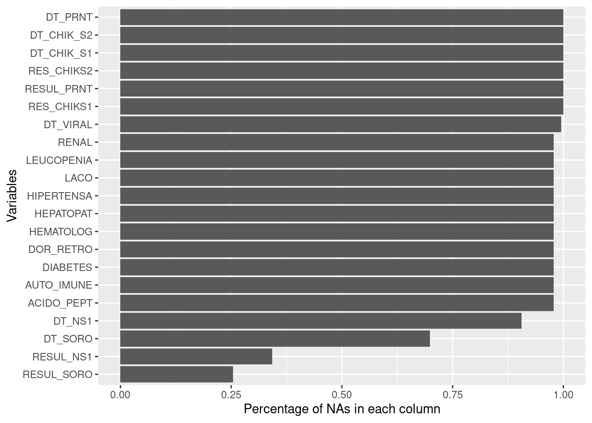
The variables with complete datasets are:
NAcount$var[NAcount$unlist.NAcount. == 0][1] "TP_NOT" "ID_AGRAVO" "DT_NOTIFIC" "SEM_NOT" "NU_ANO"
[6] "SG_UF_NOT" "ID_MUNICIP" "SEM_PRI" "NU_IDADE_N" To avoid working with unnecessary data, it is useful to filter out the variables that will not be used. Below is a line of code on how to select only the needed variables.
To avoid working with unnecessary data, it is useful to filter out the variables that will not be used. Below is a line of code on how to select only the needed variables.
Change this list as needed!
sel_var <- c("DT_NOTIFIC", "ID_MUNICIP", "DT_SIN_PRI", "DT_NASC", "NU_IDADE_N",
"CS_SEXO", "CS_GESTANT", "CS_RACA", "ID_MN_RESI", "COMUNINF",
"CLASSI_FIN", "CRITERIO", "EVOLUCAO", "DT_OBITO", "DT_SORO",
"DT_ENCERRA", "RES_CHIKS1","RES_CHIKS2", "RESUL_PRNT","RESUL_SORO","RESUL_NS1",
"RESUL_VI_N", "RESUL_PCR_","HISTOPA_N","IMUNOH_N", "MUNICIPIO")
den15 <- den15 %>% dplyr::select(dplyr::all_of(sel_var))Information on the patient
Age
 For dengue, there are two methods to obtain the age of the patients. First, using the data about the patients birth-date, which is provided in the variable DT_NASC. The age can be calculated by subtracting the birth-date from the notification date.
For dengue, there are two methods to obtain the age of the patients. First, using the data about the patients birth-date, which is provided in the variable DT_NASC. The age can be calculated by subtracting the birth-date from the notification date.
den15 <- den15 %>%
dplyr::mutate(AGE_BIRTHDAY =
ifelse(format(den15$DT_NASC, "%m-%d") > format(den15$DT_NOTIFIC, "%m-%d"),
lubridate::year(den15$DT_NOTIFIC)-lubridate::year(den15$DT_NASC)-1,
lubridate::year(den15$DT_NOTIFIC)-lubridate::year(den15$DT_NASC))) You can visualise it here:
You can visualise it here:
ggplot2::ggplot(den15, aes(x = AGE_BIRTHDAY))+
geom_histogram(binwidth = 1, fill = "lightblue",color="black", alpha = 0.7)+
annotate("text", x = 100, y = Inf, hjust = 1, vjust = 1, size = 4,
label = paste0(sum(is.na(den15$AGE_BIRTHDAY)), " NA values"))+
labs(x="Age [years]", y="Count", title="Age distribution according to the birthday field")+
theme_light()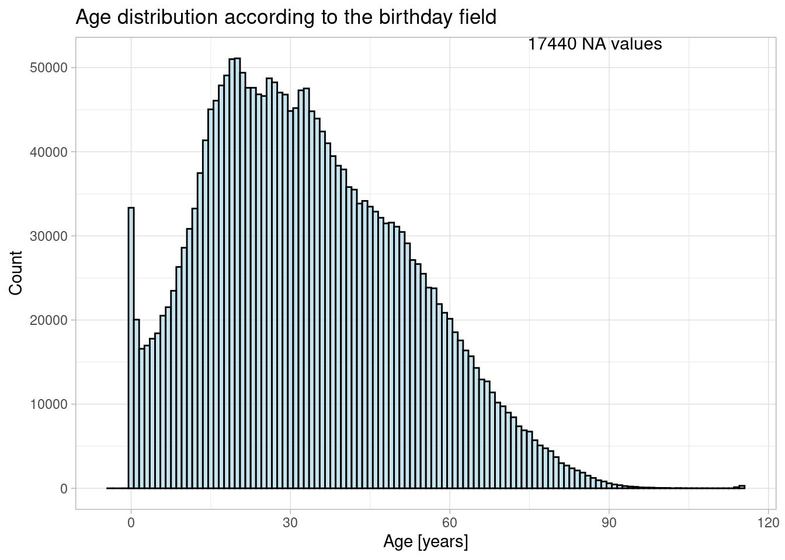
 However, DT_NASC is not a mandatory variable, thus, there are many missing values. Instead, NU_IDADE_N can be used. NU_IDADE_N is codified as follows:
However, DT_NASC is not a mandatory variable, thus, there are many missing values. Instead, NU_IDADE_N can be used. NU_IDADE_N is codified as follows:
- the first number indicates what “dimension” it is using. 1= Hour, 2= day, 3= month, 4= year.
- the last numbers indicate the age. The age can be “decodified” with the below command line.
den15 <- den15 %>%
dplyr::mutate(AGE_CODE = dplyr::case_when(NU_IDADE_N < 120 ~ as.numeric(NU_IDADE_N), # assumes that non-codified data means that the age in years was given
NU_IDADE_N >= 120 & NU_IDADE_N < 1000 ~ NA_real_,
NU_IDADE_N >= 1000 & NU_IDADE_N < 2366 ~ 0,
NU_IDADE_N >= 2366 & NU_IDADE_N < 3000 ~ NA_real_,
NU_IDADE_N >= 3000 & NU_IDADE_N < 3013 ~ 0,
NU_IDADE_N >= 3013 & NU_IDADE_N < 4000 ~ NA_real_,
NU_IDADE_N >= 4000 & NU_IDADE_N < 4120 ~ as.numeric(NU_IDADE_N - 4000),
NU_IDADE_N >= 4120 ~ NA_real_,
TRUE ~ NA_real_))
ggplot2::ggplot(den15[den15$AGE_CODE < 120,], aes(x = AGE_CODE))+
geom_histogram(binwidth = 1, fill = "lightblue",color="black", alpha = 0.7)+
annotate("text", x = 100, y = Inf, hjust = 1, vjust = 1, size = 4,
label = paste0(sum(is.na(den15$AGE_CODE)), " NA values"))+
labs(x="Age [years]", y="Count",
title="Age distribution according to the codified age field")+
theme_light()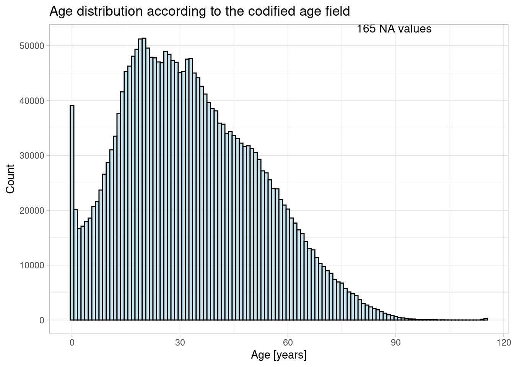
The two histograms are very similar, however there is a noticeable difference in the amount of people aged 0. Below are the first few lines of cases where the two calculated ages differ:
compare_age <- den15[(den15$AGE_BIRTHDAY - den15$AGE_CODE) >1,] %>%
dplyr::select(DT_NASC, NU_IDADE_N, AGE_CODE, AGE_BIRTHDAY)
knitr::kable(head(compare_age[!is.na(compare_age$DT_NASC),]))| DT_NASC | NU_IDADE_N | AGE_CODE | AGE_BIRTHDAY | |
|---|---|---|---|---|
| 16 | 1961-02-03 | 2001 | 0 | 53 |
| 351 | 2001-08-21 | 4010 | 10 | 13 |
| 472 | 1994-12-24 | 2001 | 0 | 20 |
| 1100 | 2009-02-26 | 3002 | 0 | 6 |
| 1252 | 1991-07-08 | 2001 | 0 | 23 |
| 1395 | 2000-06-11 | 2001 | 0 | 14 |
 There are many people with an age code of 0, but with an birthdate, that indicates a different age. Another common way to filter inconsistencies is to discard people above the age of 120.
There are many people with an age code of 0, but with an birthdate, that indicates a different age. Another common way to filter inconsistencies is to discard people above the age of 120.
Sex of the patients
 The sex of the patients is given by CS_SEXO.
The sex of the patients is given by CS_SEXO.
den15 <- den15 %>%
dplyr::mutate(CS_SEXO = as.factor(dplyr::case_when(CS_SEXO == "F" ~ "Female",
CS_SEXO == "M" ~ "Male",
CS_SEXO == "I" ~ "Ignored",
TRUE ~ "NA"))) A bar plot of its distribution can be seen below:
A bar plot of its distribution can be seen below:
ggplot2::ggplot(den15, aes(x = CS_SEXO, fill=CS_SEXO))+
geom_bar()+
ggtitle("Sex distribution of dengue cases in 2015")+
labs(x = "Sex of the patient", y = "Count", fill="Sex")+
annotate("text", x = Inf, y = Inf, hjust = 1, vjust = 1, size = 4,
label = paste0(sum(is.na(den15$CS_SEXO)), " NA values"))+
theme_light()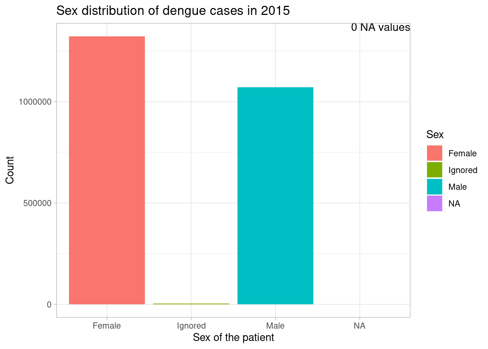
Pregnancy
 Another related variable is CS_GESTANT, which indicates whether the patient is pregnant. Since only women below a certain age can get pregnant this is another way to check for inconsistencies.
Another related variable is CS_GESTANT, which indicates whether the patient is pregnant. Since only women below a certain age can get pregnant this is another way to check for inconsistencies.
pregnant <- den15 %>%
dplyr::filter((CS_GESTANT == 1 | CS_GESTANT == 2 | CS_GESTANT ==3 | CS_GESTANT == 4)) %>%
dplyr::count()
mpreg <- den15 %>%
dplyr::filter(CS_SEXO == "M" & (CS_GESTANT == 1 | CS_GESTANT == 2 | CS_GESTANT ==3 | CS_GESTANT == 4)) %>%
dplyr::count()
pover50 <- den15 %>%
dplyr::filter(AGE_CODE > 50 & (CS_GESTANT == 1 | CS_GESTANT == 2 | CS_GESTANT ==3 | CS_GESTANT == 4)) %>%
dplyr::count() Out of 13382 pregnant patients, there are 0 pregnant males and 764 pregnant women over the age of 50. Again, depending on the aim of the study, these patients could be excluded using the following line.
Out of 13382 pregnant patients, there are 0 pregnant males and 764 pregnant women over the age of 50. Again, depending on the aim of the study, these patients could be excluded using the following line.
den15 <- den15 %>%
dplyr::filter(!(CS_GESTANT %in% c("1", "2", "3", "4") & CS_SEXO == "M") &
!(CS_GESTANT %in% c("1", "2", "3", "4") & AGE_CODE > 50))Race/Color of the patients
 The race/color of the patient is given by CS_RACA.
The race/color of the patient is given by CS_RACA.
den15 <- den15 %>%
dplyr::mutate(CS_RACA = as.factor(dplyr::case_when(CS_RACA == 1 ~ "White",
CS_RACA == 2 ~ "Black",
CS_RACA == 3 ~ "Yellow",
CS_RACA == 4 ~ "Brown",
CS_RACA == 5 ~ "Indigenous",
CS_RACA == 9 ~ "Ignored",
TRUE ~ "NA")))
ggplot2::ggplot(den15, aes(x = CS_RACA, fill=CS_RACA)) +
geom_bar() +
ggtitle("Race/Color distribution of dengue cases in 2015") +
geom_text(stat = 'count',
aes(label = paste0(round((after_stat(count))/sum(after_stat(count)) * 100, 1), "%"),
x = CS_RACA),
position = position_stack(vjust = 0.5)) +
labs(x="Race/Color of the patient", y="Count",fill="Race/Color")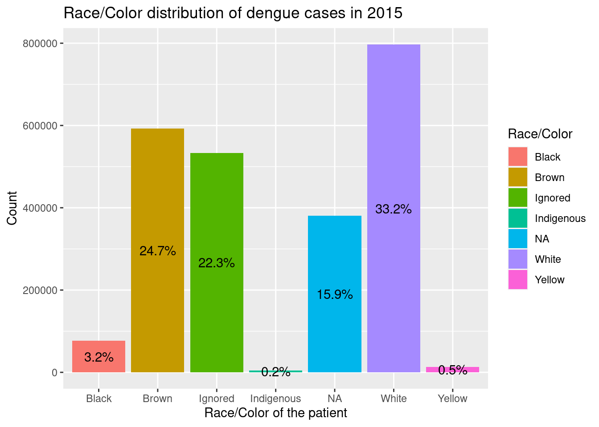
Note the amount of missing values and ignored for race/color.
Information on the cases
Classification of the dengue cases
 This database collects all the suspected cases of dengue, however, not all suspected cases are considered as probable or confirmed. The variable CLASSI_FIN gives insight about the final classification and severity of each case. It is important to note that since 2015 there are new classification rules, consequently the codification of this variables changed too. Before 2015 the numbers 1-5 were used, and now 5-13 (5 always meing “discarded”). The code is as follows:
This database collects all the suspected cases of dengue, however, not all suspected cases are considered as probable or confirmed. The variable CLASSI_FIN gives insight about the final classification and severity of each case. It is important to note that since 2015 there are new classification rules, consequently the codification of this variables changed too. Before 2015 the numbers 1-5 were used, and now 5-13 (5 always meing “discarded”). The code is as follows:
1 - Classic Dengue Fever 2 - Severe Dengue 3 - Dengue Hemorrhagic Fever - DHF 4 - Dengue Shock Syndrome 5 - Discarded 8 - Inconclusive 10 - Dengue 11 - Dengue with warning signs) 12 - Severe Dengue 13 - Chikungunya
classification <- den15 %>%
dplyr::mutate(
CLASSI_FIN = as.factor(dplyr::case_when(CLASSI_FIN == 1 ~ "Dengue",
CLASSI_FIN == 2 ~ "Severe Dengue",
CLASSI_FIN == 3 ~ "Dengue Hemorrhagic Fever",
CLASSI_FIN == 4 ~ "Dengue Shock Syndrome",
CLASSI_FIN == 5 ~ "Discarded",
CLASSI_FIN == 8 ~ "Inconclusive",
CLASSI_FIN == 10 ~ "Dengue",
CLASSI_FIN == 11 ~ "Dengue with \nwarning signals",
CLASSI_FIN == 12 ~ "Severe Dengue",
CLASSI_FIN == 13 ~ "Chikungunya",
TRUE ~ "NA")))
ggplot2::ggplot(classification) +
geom_bar(aes(x = CLASSI_FIN, fill=CLASSI_FIN)) +
geom_text(stat = 'count',
aes(label = paste0(round((after_stat(count))/sum(after_stat(count)) * 100, 1), "%"),
x = CLASSI_FIN),
position = position_stack(vjust = 0.5)) +
labs(x="Classification category",
y="Count",
title="Final classification of dengue cases in 2015",
fill= "Classification")+
theme_minimal()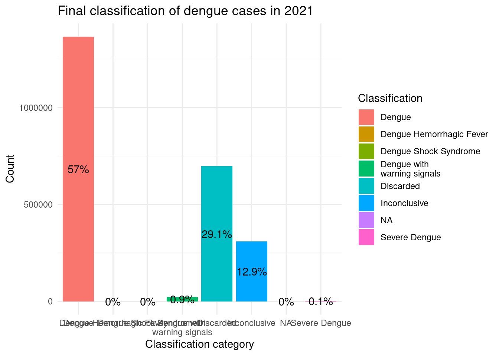
 Almost 29.1% of the cases in 2015 were discarded. If a study only considers probable dengue cases, these discarded cases, as well as those without classification, should be discarded.
Almost 29.1% of the cases in 2015 were discarded. If a study only considers probable dengue cases, these discarded cases, as well as those without classification, should be discarded.
Confirmation criteria of the cases
 It can be of interest how the dengue case are confirmed. Information about the type of confirmation can be extracted from the variable CRITERIO. In Brazil there are three different options:
It can be of interest how the dengue case are confirmed. Information about the type of confirmation can be extracted from the variable CRITERIO. In Brazil there are three different options:
- laboratory exams
- clinical epidemiological, which means that a physician talked to the patient.
- Unknown
criteria <- den15 %>%
dplyr::count(CRITERIO, name = "count") %>%
dplyr::mutate(percentage = prop.table(count),
category = c("Laboratory", "Clinical epidimiological","Under investigation","Unknown"))ggplot2::ggplot(criteria, aes(x = category, y = count, fill = category)) +
geom_bar(stat = "identity") +
geom_text(aes(label = paste0(round(percentage * 100, 1), "%")),
position = position_stack(vjust = 0.5)) +
labs(x = "Confirmation criteria",
y = "Count",
title = "Confirmation criteria of dengue cases in 2015",
fill = "Confirmation Criteria") +
theme_minimal()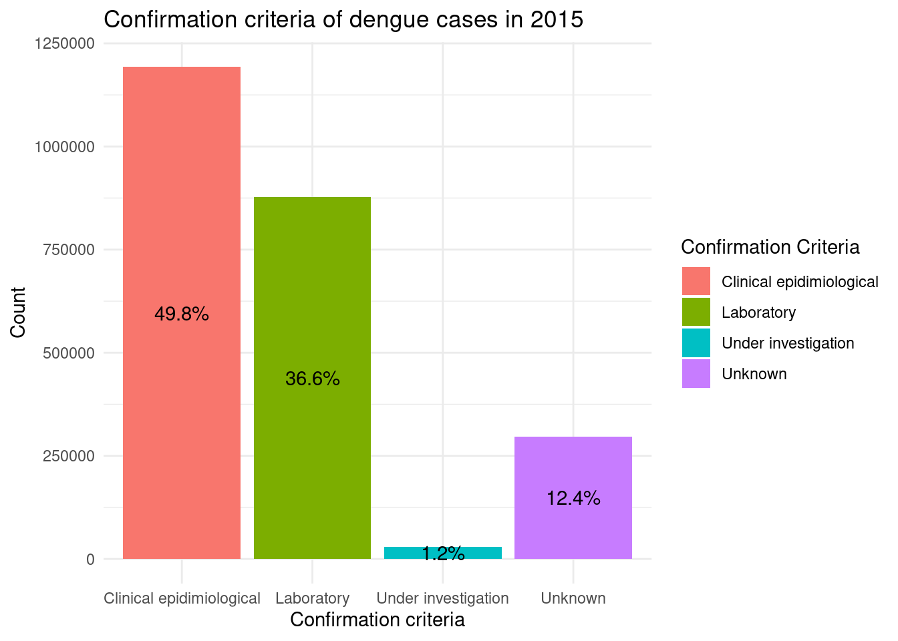
49.8% of the cases were confirmed/discarded via the criteria of clinical epiediomogical, and 36.6% via laboratory exams. A detailed description of which exams are tipically used can be seen in the exam type section.
 If you are interest solely in confirmed cases, then all cases with unknown or missing criteria have to be dismissed.
If you are interest solely in confirmed cases, then all cases with unknown or missing criteria have to be dismissed.
Categories of dengue
 Based on its classification and confirmation criterium, dengue cases can be categorized into 4 different categories. They have been mentioned in the previous sections, but for clarity they are listed and defined here again:
Based on its classification and confirmation criterium, dengue cases can be categorized into 4 different categories. They have been mentioned in the previous sections, but for clarity they are listed and defined here again:
- Suspect cases: all notifications.
- Confirmed cases: dengue cases confirmed by laboratory or clinic-epidemiological criteria.
- Probable cases: dengue cases discarding missing values and discarded category of the CLASSI_FIN variable.
- Discarded category of the CLASSI_FIN variable.
Exam type
 In the case of confirmation via laboratory exams, there are 9 different possible exams. Each exam has its own variable, with a numerical code that indicates its result:
In the case of confirmation via laboratory exams, there are 9 different possible exams. Each exam has its own variable, with a numerical code that indicates its result:
- means the result of the exam is positive
- means the result of the exam is negative
- means the result of the exam is inconclusive
- means the exam was not realized
exams <- den15 %>%
dplyr::filter(CRITERIO == 1) %>%
dplyr::summarise('Serological exam 1 (Chikungunya)' = sum(!is.na(RES_CHIKS1) & RES_CHIKS1 != 4 ),
'Serological exam 2 (Chikungunya)' = sum(!is.na(RES_CHIKS2) & RES_CHIKS2 != 4),
'PRNT exam' = sum(!is.na(RESUL_PRNT) & RESUL_PRNT != 4),
'Serological exam (dengue)' = sum(!is.na(RESUL_SORO) & RESUL_SORO != 4),
'NS1 exam' = sum(!is.na(RESUL_NS1) & RESUL_NS1 != 4),
'Viral isolation' = sum(!is.na(RESUL_VI_N) & RESUL_VI_N != 4),
'PCR exam' = sum(!is.na(RESUL_PCR_) & RESUL_PCR_ != 4),
'Histopatology exam' = sum(!is.na(HISTOPA_N) & HISTOPA_N != 4),
'Immunohistochemistry exam' = sum(!is.na(IMUNOH_N) & IMUNOH_N != 4))
exams <- data.frame(var= colnames(exams), val= t(exams))ggplot2::ggplot(exams, aes(x = var, y = val, fill=val)) +
geom_bar(stat = "identity",aes(reorder(var, val), val)) +
ggtitle("Frequency of each lab exam performed for dengue cases in 2015") +
xlab("Exams") +
theme(axis.text.x = element_text(angle = 90, hjust = 0.5, vjust = 0.5))+
ylab("Count")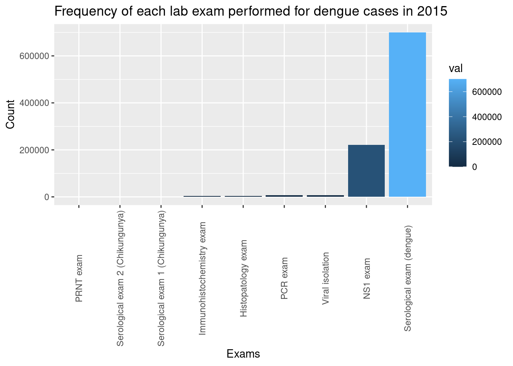
As can be seen, the serological exam is by far the most used one, followed by NS1. The other exams are hardly used.
Evolution of case
 Finally, the variable EVOLUCAO defines the outcome of each dengue case.
Finally, the variable EVOLUCAO defines the outcome of each dengue case.
evolution <- den15 %>%
dplyr::mutate(
EVOLUCAO = as.factor(dplyr::case_when(EVOLUCAO == 1 ~ "Cured",
EVOLUCAO == 2 ~ "Death by \nillness",
EVOLUCAO == 3 ~ "Death by \nother cause",
EVOLUCAO == 4 ~ "Death under \ninvestigation",
EVOLUCAO == 9 ~ "Ignored",
TRUE ~ "NA")))
ggplot2::ggplot(evolution) +
geom_bar(aes(x = EVOLUCAO, fill= EVOLUCAO)) +
geom_text(stat = 'count',
aes(label = paste0(round((after_stat(count))/sum(after_stat(count)) * 100, 1), "%"),
x = EVOLUCAO),
position = position_stack(vjust = 0.5)) +
labs(x="Category", y = "Count", fill="Category", title="Final outcomes of dengue cases in 2015" )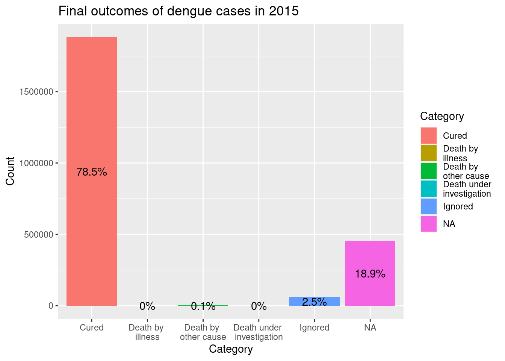
Timeline of dengue cases
Notification distribution throughout the year
 The date of the first time that a potential dengue patient contacts the medical authorities is recorded as DT_NOTIF. This variable can be used to see clear temporal patterns throughout the year. Below, there is the annual distribution of dengue notifications in 2015, plotted at a temporal resolution of epidemiological week. In an epidemiological week, the week starts on Sunday.
The date of the first time that a potential dengue patient contacts the medical authorities is recorded as DT_NOTIF. This variable can be used to see clear temporal patterns throughout the year. Below, there is the annual distribution of dengue notifications in 2015, plotted at a temporal resolution of epidemiological week. In an epidemiological week, the week starts on Sunday.
dengueEpiWeek <- den15 %>%
dplyr::mutate(epiweek = paste0(sprintf("%02d",lubridate::epiweek(DT_NOTIFIC)), "-2015")) %>%
dplyr::group_by(epiweek) %>%
dplyr::summarise(count = dplyr::n()) %>%
dplyr::select(epiweek, count)ggplot2::ggplot(dengueEpiWeek, aes(x = epiweek, y = count)) +
geom_bar(stat = "identity", fill = "lightblue", color="darkgrey",alpha = 0.7)+
annotate("text", x = Inf, y = Inf, hjust = 1, vjust = 1, size = 4,
label = paste0(sum(is.na(den15$DT_NOTIFIC)), " NA values")) +
theme_minimal() +
labs(title = "Suspected dengue cases in 2015 by epiweek",
x = "Epiweek",
y = "Count") +
theme(axis.text.x = element_text(angle = 90, vjust = 0.5, hjust = 1))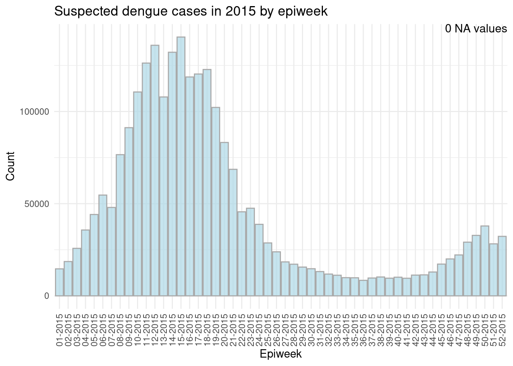
There is a clear seasonal variation, with the peak presenting itself in the middle of the Autumn season in Brazil.
Duration of each dengue case
 Once the initial notification happens, the timeline of each case starts. The duration of the complete process is delimited by the “closing date” (DT_ENCERRA). Below is a histogram to see the duration of each dengue case.
Once the initial notification happens, the timeline of each case starts. The duration of the complete process is delimited by the “closing date” (DT_ENCERRA). Below is a histogram to see the duration of each dengue case.
duration <- as.numeric(den15$DT_ENCERRA - den15$DT_NOTIFIC)ggplot2::ggplot(data.frame(duration = duration[duration < 100]), aes(x = duration)) +
geom_histogram(bins = 100, fill = "lightblue",color="black", alpha = 0.7)+
annotate("text", x = Inf, y = Inf, hjust = 1, vjust = 1, size = 4,
label = paste0(sum(is.na(den15$DT_ENCERRA)), " NA values")) +
labs(title = "Duration from notification to closing of the case",
x = "Time [days]",
y = "Count")Warning: Removed 19525 rows containing non-finite values (`stat_bin()`).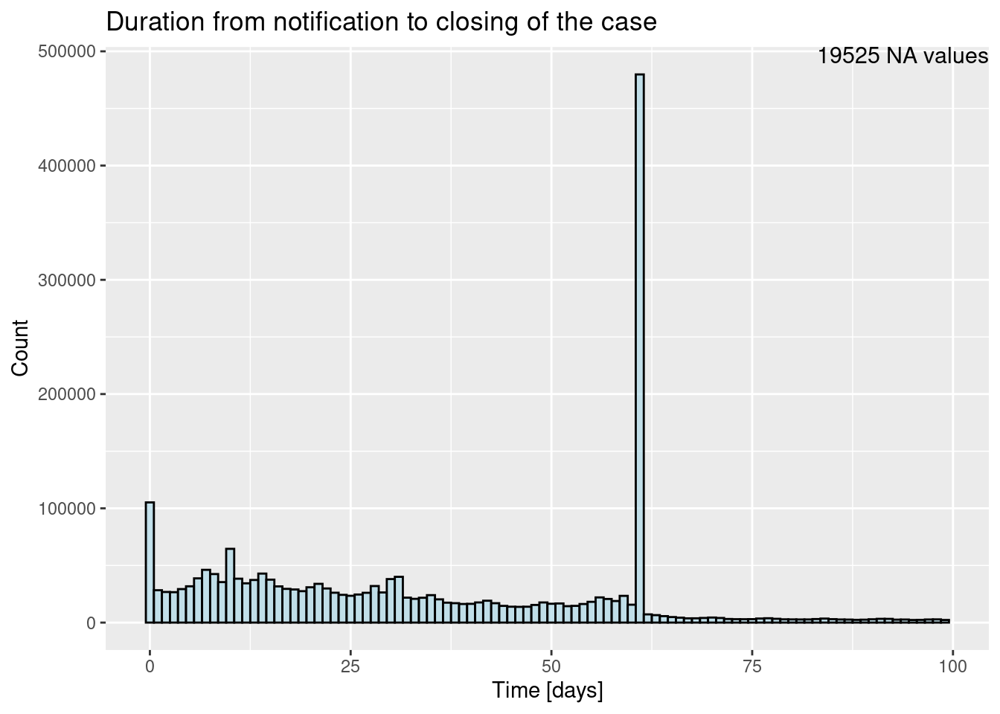
There is an extremely large amount of cases that end on the 61st day, to be specific 20.01%. Only 10.14% of the case take longer than 61 days.
Timeline of all other events
 There are many dates recorded to be able ti understand the course of the disease. First, symptoms occur (DT_SIN_PRI), this occurs before the notification date. Once the doctor notified a dengue suspicion (DT_NOTIF) the case needs to be confirmed via an exams, this should happen shortly after the notification. Finally, there must be a closing date (DT_ENCERRA) or date of death (DT_OBITO). Both of these have to be after the notification date.
There are many dates recorded to be able ti understand the course of the disease. First, symptoms occur (DT_SIN_PRI), this occurs before the notification date. Once the doctor notified a dengue suspicion (DT_NOTIF) the case needs to be confirmed via an exams, this should happen shortly after the notification. Finally, there must be a closing date (DT_ENCERRA) or date of death (DT_OBITO). Both of these have to be after the notification date.
time <- data.frame(A_SYMP = as.numeric(den15$DT_SIN_PRI - den15$DT_NOTIFIC),
B_SORO = as.numeric(den15$DT_SORO - den15$DT_NOTIFIC),
C_DEAD = as.numeric(den15$DT_OBITO - den15$DT_NOTIFIC),
D_TOTAL = as.numeric(den15$DT_ENCERRA - den15$DT_NOTIFIC))
long <- tidyr::gather(time, TYPE, DAYS, A_SYMP:D_TOTAL)ggplot2::ggplot(long, aes(x = TYPE, y = DAYS)) +
geom_boxplot() +
coord_cartesian(ylim = c(-100, 100)) +
labs(x="Event",
y="Days from the notification day",
title="") +
scale_x_discrete(labels = c("First Symptoms", "Sorological Exam", "Death", "Case closed"))Warning: Removed 4089321 rows containing non-finite values (`stat_boxplot()`).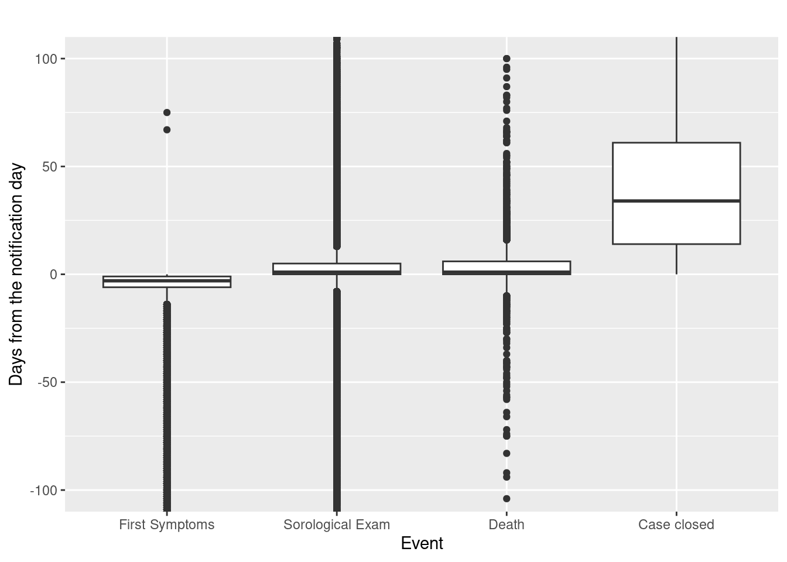
 Most dates should fall within a few days before the notification day or within two months after it. However, looking at the boxplots, this is clearly not the case. If one wants to work with the timeline of dengue cases, these erroneous cases need to be removed, e.g. someone dying before the notification date or someone having their first symptoms on the 215-04-03.
Most dates should fall within a few days before the notification day or within two months after it. However, looking at the boxplots, this is clearly not the case. If one wants to work with the timeline of dengue cases, these erroneous cases need to be removed, e.g. someone dying before the notification date or someone having their first symptoms on the 215-04-03.
Mapping spatially
Absolute cases
 There is of course also spatial data in the datasets. Before beginning the analysis, it is necessary to download the shapefiles of Brazils municipalities. This can be done via the geobr package (more info on this in 0_DownloadData.md). However, the municipality code given by geobr is one digit too long and has to be shortened to 6 digits.
There is of course also spatial data in the datasets. Before beginning the analysis, it is necessary to download the shapefiles of Brazils municipalities. This can be done via the geobr package (more info on this in 0_DownloadData.md). However, the municipality code given by geobr is one digit too long and has to be shortened to 6 digits.
muni <- geobr::read_municipality(code_muni = "all", year = 2015, showProgress = FALSE) %>%
dplyr::mutate(code_muni = stringr::str_sub(code_muni, end = 6))In total, the dataset refers to 4 different locations:
- ID_MUNICIP is the municipality where the case is recorded.
- ID_MN_RESI is the municipality of residence of the patient.
- COMUNINF is the probable municipality of infection.
- MUNICIPIO is the municipality of the hospital (if hospitalized).
noti <- as.data.frame(table(den15$ID_MUNICIP, dnn = list("code_muni")), responseName = "noti_muni")
infec <- as.data.frame(table(den15$COMUNINF, dnn = list("code_muni")), responseName = "infec_muni")
resi <- as.data.frame(table(den15$ID_MN_RESI, dnn = list("code_muni")), responseName = "resi_muni")
hosp <- as.data.frame(table(den15$MUNICIPIO, dnn = list("code_muni")), responseName = "hosp_muni")
allmuni <- dplyr::left_join(muni, noti) %>%
dplyr::left_join(., infec) %>%
dplyr::left_join(., resi) %>%
dplyr::left_join(., hosp)
cols <- c("green", "yellow","orange","red", "black")
breaks <- c(0,10,100,1000,10000,100000)
noti <- ggplot2::ggplot(allmuni) +
ggtitle("Notification municipality")+
geom_sf( aes(fill=noti_muni), size=.15, show.legend = TRUE) +
scale_fill_stepsn(breaks = breaks,
colours = cols,
values= scales::rescale(breaks))
infec <- ggplot2::ggplot(allmuni) +
ggtitle("Probable infections municipality")+
geom_sf( aes(fill=infec_muni), size=.15, show.legend = TRUE) +
scale_fill_stepsn(breaks = breaks,
colours = cols,
values= scales::rescale(breaks))
resi <- ggplot2::ggplot(allmuni) +
ggtitle("Residence municipality")+
geom_sf( aes(fill=resi_muni), size=.15, show.legend = TRUE) +
scale_fill_stepsn(breaks = breaks,
colours = cols,
values= scales::rescale(breaks))
hosp <- ggplot(allmuni) +
ggtitle("Hospitalizations municipality")+
geom_sf( aes(fill=hosp_muni), size=.15, show.legend = TRUE) +
scale_fill_stepsn(breaks = breaks,
colours = cols,
values= scales::rescale(breaks))
#using the patchwork library, the plots can be displayed next to each other
(noti+infec)/(resi+hosp)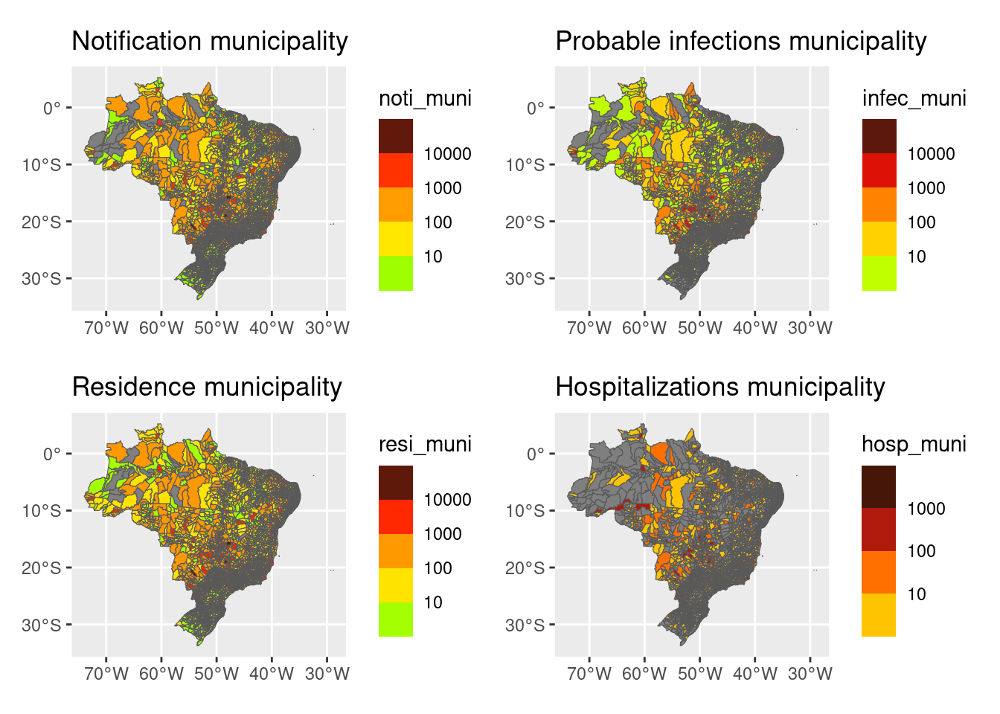
Depending on the aim of the study, different variables can be important. For example, if your work aims to understand the dengue prevalence, the municipality of residence is the most suitable. However, if you need to evaluate the healthcare infrastructure, the municipality of hospitalisation could be more suitable.
Calculate the incidence
 Sometimes, having the absolute values is helpful. But other times, the number of dengue cases are highly dependent on the number of inhabitants and then the incidence is used. The incidence describes how many dengue cases occurred per 100.000 inhabitants.
Sometimes, having the absolute values is helpful. But other times, the number of dengue cases are highly dependent on the number of inhabitants and then the incidence is used. The incidence describes how many dengue cases occurred per 100.000 inhabitants.
For this, the population data needs to be loaded from IBGE either manually or using the local function “get_br_pop_data” (instructions can be viewed in 0_DownloadData.md).
get_br_pop_data(2015, save=F)
allmuni <- dplyr::left_join(allmuni, pop_2015[c("code_muni","pop")], by="code_muni")
allmuni$pop <- as.numeric(allmuni$pop)The incidence is then calculated by dividing the dengue cases by the population of each municipality and multiplicating it by 100.000.
allmuni$noti_inc <- allmuni$noti_muni / allmuni$pop * 100000
allmuni$infec_inc <- allmuni$infec_muni / allmuni$pop * 100000
allmuni$resi_inc <- allmuni$resi_muni / allmuni$pop * 100000
allmuni$hosp_inc <- allmuni$hosp_muni / allmuni$pop * 100000
# Population
ggplot2::ggplot(allmuni) +
ggtitle("Population in Brazil")+
geom_sf( aes(fill = pop), size = .15, show.legend = TRUE) +
scale_fill_stepsn(breaks = breaks,
colours = cols,
values= scales::rescale(breaks))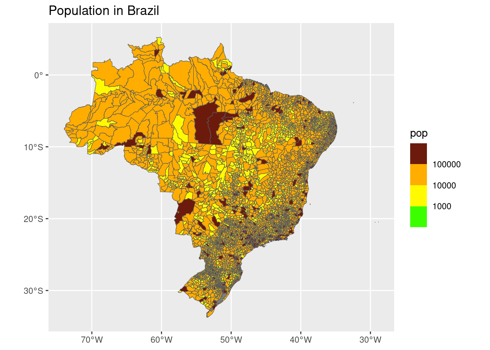
# Incidence
breaks2 <- c(0,5,25,50,100, 250)
noti_inc <- ggplot2::ggplot(allmuni) +
ggtitle("Incidence of dengue notifications in 2015")+
geom_sf( aes(fill = noti_inc), size = .15, show.legend = TRUE) +
scale_fill_stepsn(breaks = breaks2,
colours = cols,
values = scales::rescale(breaks2))
infec_inc <- ggplot2::ggplot(allmuni) +
ggtitle("Incidence of probable dengue infections in 2015")+
geom_sf( aes(fill = infec_inc), size = .15, show.legend = TRUE) +
scale_fill_stepsn(breaks = breaks2,
colours = cols,
values = scales::rescale(breaks2))
resi_inc <- ggplot2::ggplot(allmuni) +
ggtitle("Incidence of residents with dengue in 2015")+
geom_sf( aes(fill = resi_inc), size = .15, show.legend = TRUE) +
scale_fill_stepsn(breaks = breaks2,
colours = cols,
values = scales::rescale(breaks2))
hosp_inc <- ggplot2::ggplot(allmuni) +
ggtitle("Incidence of dengue hospitalizations in 2015")+
geom_sf( aes(fill = hosp_inc), size = .15, show.legend = TRUE) +
scale_fill_stepsn(breaks = breaks2,
colours = cols,
values = scales::rescale(breaks2))
(noti_inc+infec_inc)/(resi_inc+hosp_inc)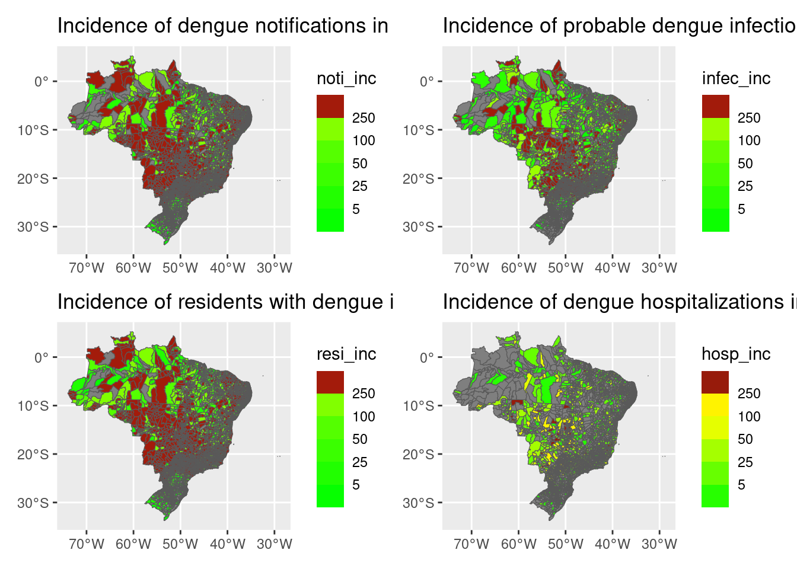